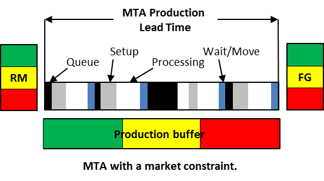

производство-для-наличия (make-to-availability) - (MTA) Комбинация маркетингового сообщения о приверженности доступности определенных товаров в определенном месте с требуемой производственной политикой для ее достижения.
Использование: Производство-для-наличия соответствует производственной среде, ориентированной на потребление (поставка в соответствии с потреблением), используемой для немедленного и надежного реагирования на спрос, когда время терпения клиента меньше, чем время выполнения заказа. Запасы поддерживаются в цепочке поставок, чтобы гарантировать 100%-ную доступность при минимальном запасе. Заказы клиентов состоят в основном из очень небольших количеств известных (повторяющихся) товаров, и приверженность рынку должна включать в себя максимальный немедленный спрос на один заказ, что позволяет сократить запасы и увеличить оборачиваемость запасов.
Иллюстрация. Буферы запасов готовой продукции обычно хранятся на центральном или заводском складе для агрегирования заказов от нисходящих звеньев и служат основой для планирования производства на производственных объектах. Количество, потребленное из централизованных буферов запаса, определяет объемы производства, а статус буфера определяет приоритеты для производства. Используется упрощенный барабан-буфер-канат для планирования и управления буфером для поддержания приоритетов в исполнении. Связи нижестоящей цепочки поставок (оптовики, дистрибьюторы и розничные торговцы) поддерживают небольшие запасы каждой SKU, делают ежедневные заказы и часто пополняют их с централизованного производственного предприятия, расположенного выше по цепочке (предшествующее звено в каждой цепочке). Затем производственное предприятие пополняет централизованный буфер запасов, размещая производственные заказы. Централизованный буфер действует как стратегическая контрольная точка, управляющая спросом и предложением по всей цепочке поставок. Буферы для сырья обычно хранятся на производственном предприятии, чтобы сократить время выполнения заказа поставщиками за счет частого пополнения запасов от поставщиков.

См.:инъекции производства-для-наличия, изготовление на заказ, изготовление на склад.
#производство
Синоним: make-to-availability